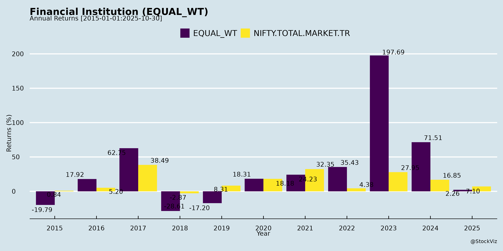
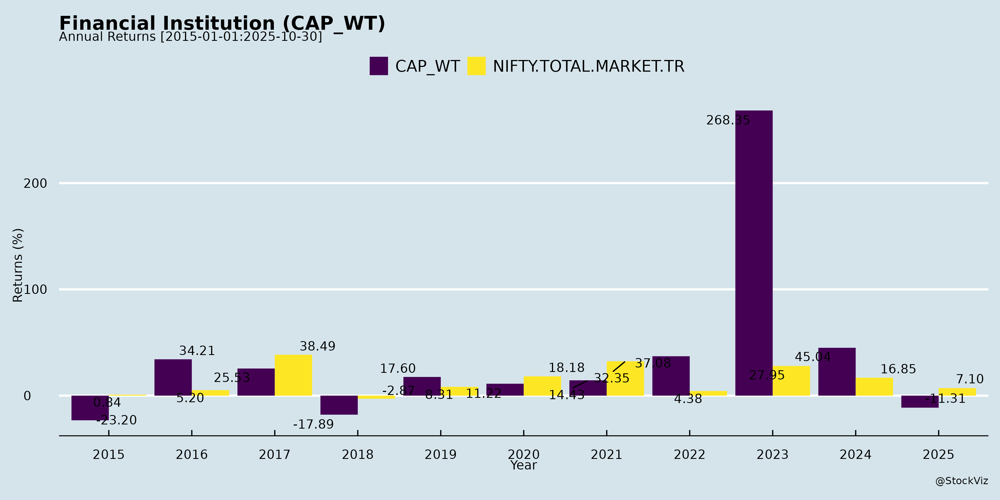
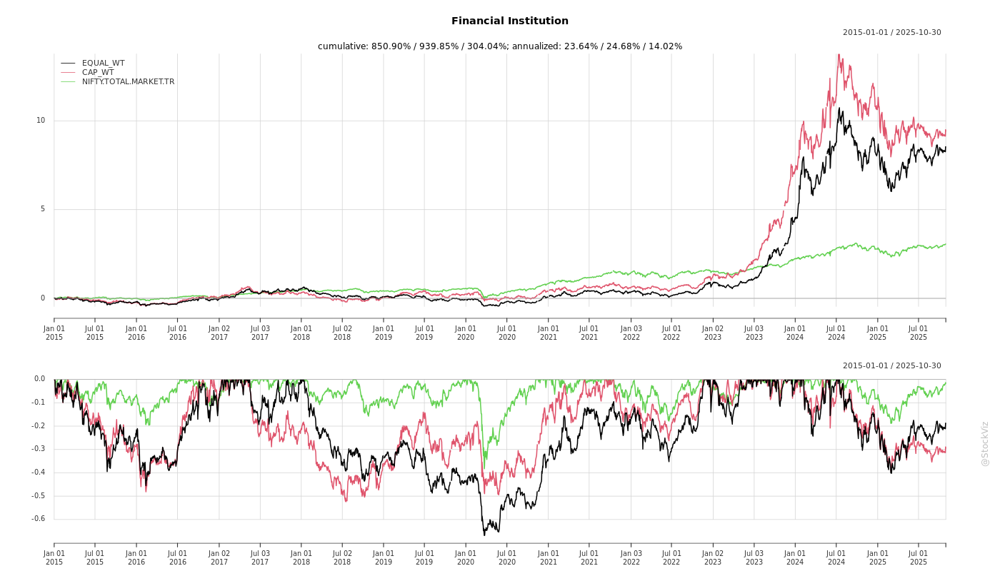
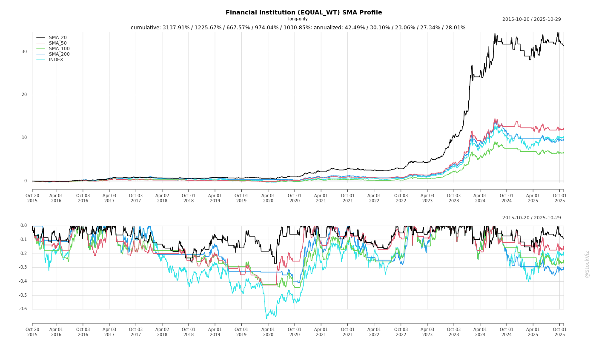
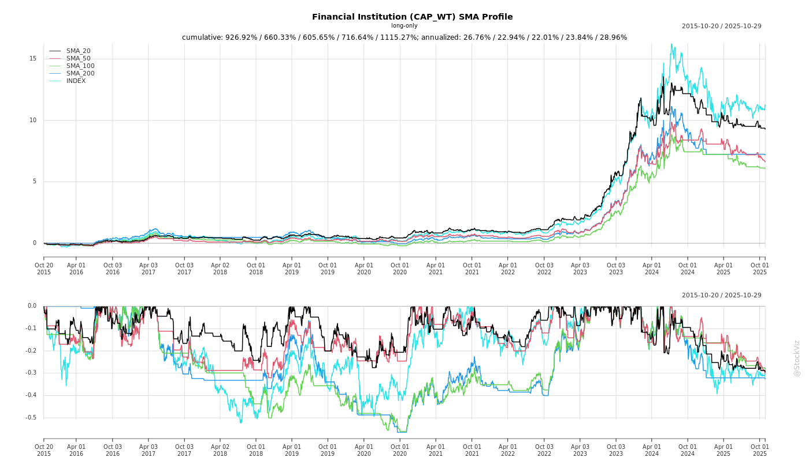
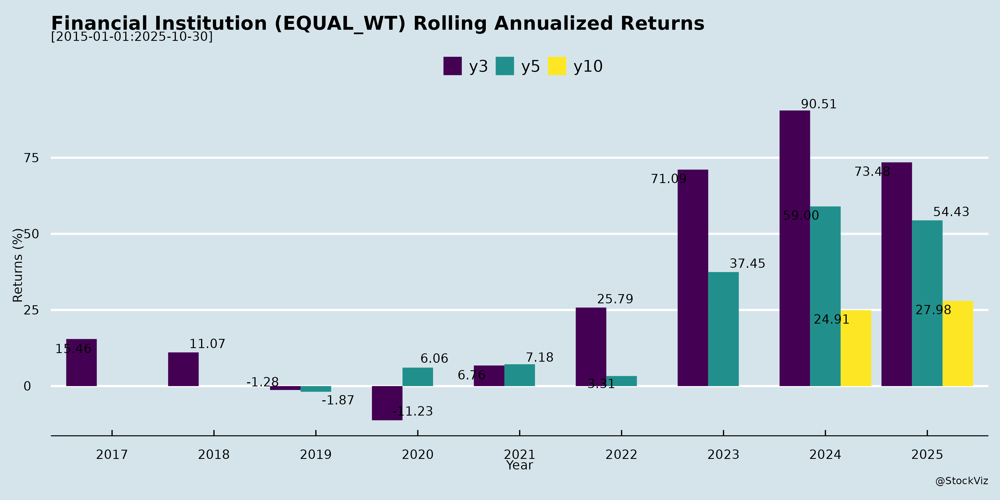
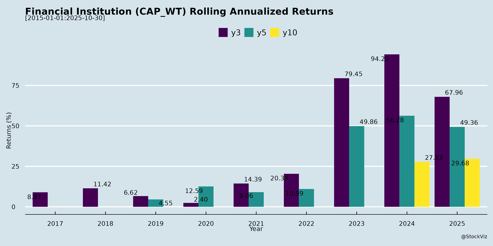

asof: 2025-11-30
These documents cover Q2/H1 FY25-26 earnings transcripts (IRFC, REC, HUDCO) and disclosures (PFC, IREDA), representing key govt-backed financiers in rail (IRFC), power (PFC/REC), urban/housing (HUDCO), and renewables (IREDA). They exhibit strong alignment with India’s infra capex push (e.g., NIP, power transition, Viksit Bharat). Below is a structured analysis of tailwinds, headwinds, growth prospects, and key risks, followed by a summary.
| Institution | FY26 AUM/Disbursal Guidance | Long-Term Target |
|---|---|---|
| IRFC | ₹30k Cr disbursal | Steady upward AUM/PAT |
| REC | 11-12% loan growth | ₹10L Cr by 2030 |
| HUDCO | ₹50k Cr disbursal (+25%) | ₹1.6L Cr by Mar’26; ₹3L Cr by 2030 |
These institutions are poised for sustained double-digit growth (AUM/PAT +25-30% FY26+), fueled by India’s ₹100L+ Cr infra capex (power/rail/urban/RE) and govt alignment. Tailwinds dominate (pipelines, low NPAs, falling costs), with diversification enhancing margins (2-3x railway yields). Growth is volume-driven, targeting ₹20L+ Cr cumulative AUM by 2030. However, headwinds like prepayments/forex temper near-term loan growth, while risks center on execution, competition, and quality in new segments. Overall bullish outlook (ROE 15-22%; dividends intact), but monitor forex/NPAs quarterly. Sector CRAR/debt-equity remains healthy (<7-8x), supporting self-funded expansion without dilution. Recommendation: Accumulate on dips for long-term infra play.
asof: 2025-12-01
Analysis of Indian Infrastructure Finance NBFCs (IRFC, PFC, REC, IFCI, TFCI, HUDCO)
The provided documents cover unaudited/audited Q3 FY25 financial results, board outcomes, and disclosures for key Government of India (GoI)-backed NBFCs focused on infrastructure financing (railways, power, rural electrification, housing, industrial, and tourism sectors). These entities benefit from sovereign backing but face sector-specific challenges. Below is a structured analysis of headwinds (challenges), tailwinds (positives), growth prospects, and key risks, based on balance sheets, P&L, cash flows, NPAs, CRAR, dividends, and notes.
Tailwinds (Positive Factors)
Headwinds (Challenges)
Growth Prospects
Key Risks
| Risk Category | Description | Mitigants |
|---|---|---|
| Credit Risk | High GNPA (IFCI 96%; sector 2-3%), SMA stress. ECL overlays signal caution. | Govt guarantees (REC 44% loans covered), diversification. |
| Liquidity/ Funding Risk | Debt:Equity 4-8x (PFC 4.8x, REC 6.4x). Forex exposure (hedged but volatile). | AAA ratings, govt equity infusions (e.g., IFCI ₹500 Cr). |
| Interest Rate Risk | Rising rates squeeze NIMs (finance costs 60-70% expenses). | Hedging (cash flow hedges in OCI). |
| Regulatory/Compliance | CRAR shortfalls (IFCI negative), ECL vs IRACP gaps. | RBI compliance, no defaults noted. |
| Operational/Subsidiary | Weak subs drag (IFCI/PFC unreviewed subs). Litigation (e.g., IFCI SHCIL case). | Consolidation plans (IFCI group merger in-principle). |
| Macro | Slow infra execution, power sector transition risks. | Stable govt patronage. |
Overall Summary: These NBFCs are resilient due to govt backing and infra tailwinds, with PFC/REC/IRFC as sector leaders (PAT growth, strong CRAR). IFCI lags (losses, high NPAs). Growth tied to capex cycle (high potential), but risks from NPAs/FX/regulations persist. Sector outlook positive (projected 12-15% AUM CAGR FY26), monitor IFCI closely.
asof: 2025-12-03
Summary Analysis of Indian Financial Institutions (Infra-Focused NBFCs/CPSEs)
The provided disclosures from key Indian financial institutions (IRFC, PFC, REC, HUDCO, IREDA, IFCI, TFCI) – primarily government-owned NBFCs financing infrastructure, power, housing, railways, and tourism – reveal a sector aligned with India’s Viksit Bharat vision. These entities (mostly Navratna CPSEs) benefit from sovereign backing but face governance hurdles. Below is a structured analysis of headwinds, tailwinds, growth prospects, and key risks, based on the documents.
Tailwinds (Positive Drivers)
Headwinds (Challenges)
Growth Prospects
Key Risks
| Risk Category | Description | Mitigation from Docs |
|---|---|---|
| Governance/Regulatory | Fines/delays in board appointments (IRFC); SEBI compliances. | Waiver requests; govt ministry reliance. |
| Asset Quality | NPAs (HUDCO resolving ₹1,757 Cr GNPA via NCLT/DRT); consortium exposures. | High govt exposure (98.7%), strong PCR; zero NNPA target. |
| Funding & Liquidity | High debt-equity (HUDCO 6.98x); forex/currency risks (ECB). | Diversified sources (bonds 49%, banks 31%); AAA ratings. |
| Execution/Policy | Project delays (REC SPVs to be bid out); scheme dependencies. | TBCB guidelines; MoUs lock pipelines. |
| Market/External | Interest rate hikes; private sector ramp-up risks (HUDCO new division). | Low cost of funds (6.32% incremental); ESG edge. |
Overall Sector Outlook: Positive with Moderate Risks. Tailwinds from infra boom outweigh headwinds; growth pegged at 25-30% loan book CAGR, driven by HUDCO/REC. Risks are manageable due to sovereign support/low NPAs, but governance fixes needed. Investors should monitor Q3FY26 results and regulatory waivers. HUDCO emerges as sector bellwether with superior metrics.
asof: 2025-11-30
Analysis of Indian Infrastructure NBFCs/CPSEs (IRFC, PFC, REC, HUDCO, IREDA)
These government-backed financiers (all Navratna/Maharatna CPSEs) dominate infra lending in railways, power, housing, urban dev, and renewables. Drawing from Q2/H1 FY26 earnings transcripts and announcements (as of Oct-Nov 2025), here’s a structured analysis of headwinds, tailwinds, growth prospects, and key risks. Data reflects strong H1 performance amid India’s infra boom (e.g., NIP, 500GW RE target by 2030).
Tailwinds (Positive Drivers)
Headwinds (Challenges)
Growth Prospects
Key Risks
| Risk Category | Details | Mitigants |
|---|---|---|
| Asset Quality | Diversification into uncharted areas (e.g., IRFC non-rail; HUDCO private); Stage-2 NPAs (REC ₹16k Cr). Slippage risk in state utilities. | 70-84% secured/commissd assets; zero NPA history (IRFC); PCR 45-77%; stressed asset teams. |
| Interest Rate/FX | Margin compression (repo cuts); ECB volatility (₹10-15k Cr exposure across entities). | 60% fixed-rate borrowings; hedging (IREDA 75% FCY); low gearing (5-7x). |
| Regulatory/Policy | RBI norms, DISCOM debt restructure, MAT revival (IRFC). Budget dependency. | Govt nodal agency status; whole-of-govt approach. |
| Execution | Delays in COD/milestones; competition from banks/NaBFID. | Tech-enabled monitoring; experienced mgmt; strong pipelines (₹2.5-8L Cr MOUs). |
| Macro | Fiscal slippages in states; cyclical capex slowdown. | 86% state sector (REC); RE policy push. |
Overall Summary:
Bullish Outlook with robust tailwinds from govt infra push (RE/urban/rail) driving 20-30% AUM CAGR. H1 FY26 showcases record sanctions/disburse (avg +30-80% YoY), NIM gains, and pristine balance sheets. Growth anchored in ₹30-80L Cr sector opps to 2030. Headwinds manageable (competition, FX) via diversification/low CoF. Key Risks low (asset quality via govt ecosystem; contained NPAs <2%). Recommendation: High conviction; monitor RE execution/FX. Peers like REC/IREDA lead RE; IRFC/HUDCO infra plays. Valuations attractive on 15-22% ROE trajectory.
asof: 2025-12-03
Analysis of IRFC and IREDA as Indian Financial Institutions
IRFC (Indian Railway Finance Corporation Ltd.) and IREDA (Indian Renewable Energy Development Agency Ltd.) are key Government of India enterprises financing critical infrastructure sectors (railways and renewables). The provided disclosures highlight positive developments: IRFC’s ECB raise of ~USD 300M (JPY-denominated, 5-year tenor, unsecured) after 3+ years, and IREDA’s S&P credit upgrade to ‘BBB’ (stable) from ‘BBB-’ (short-term ‘A-2’). Below is a structured analysis based solely on these documents.
IRFC Analysis
IREDA Analysis
Summary
| Aspect | IRFC | IREDA | Overall for Indian Fin. Insts. (NBFCs like these) |
|---|---|---|---|
| Tailwinds | ECB revival, cost reduction, infra focus | Sovereign-aligned rating, funding ease | Govt backing, infra/renewable tailwinds, global access |
| Headwinds | Currency/drawdown delays | Minimal (pre-upgrade constraints eased) | FX/interest volatility, undrawn facilities |
| Growth Prospects | High (railway infra expansion) | Strong (green energy leadership) | Robust (national priorities: railways/renewables) |
| Key Risks | Rate/FX, unsecured nature | Sector cyclicality | Compliance, economic sensitivity, floating rates |
Overall Outlook: Both exhibit strong tailwinds from strategic funding/rating wins, positioning them for growth in priority sectors amid India’s infra push. Risks are manageable (mostly market-linked), with limited headwinds. These moves underscore resilience and cost-competitiveness for govt-backed financiers, likely supporting positive stock/credit trajectories. No material related-party or conflict issues noted.
Copyright © 2023 SAS Data Analytics Pvt. Ltd. All rights reserved.